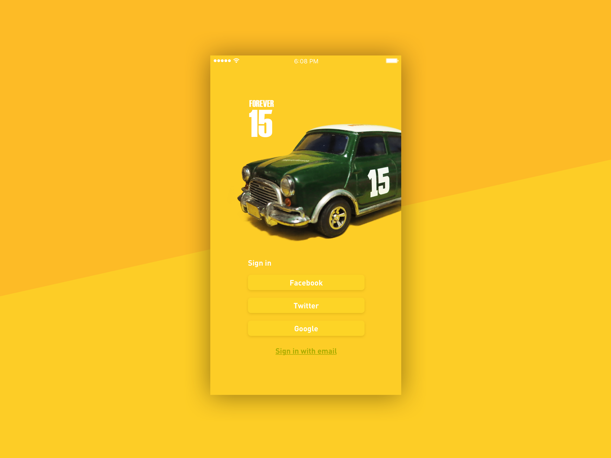

Daily UI
When the Daily UI project came out a few years ago, I decided to accept this challenge and explore the possibility of user interface. Here are some of my selected works from this project.
Year: 2015
Type: Personal project
Duration: 3months
Login
